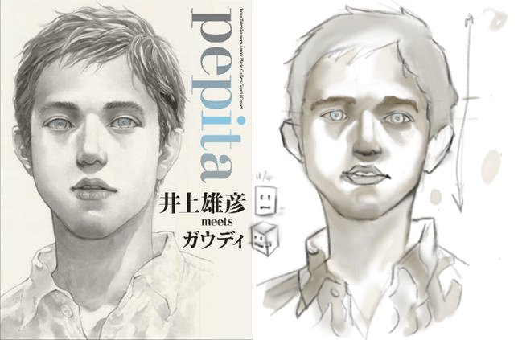
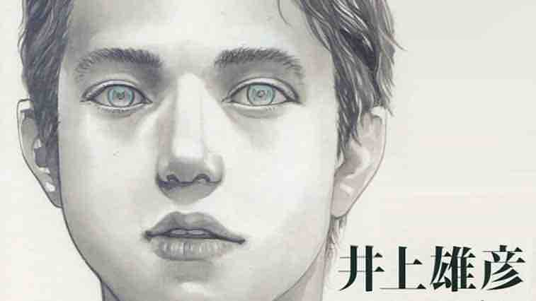
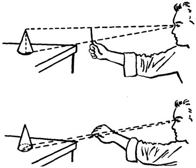
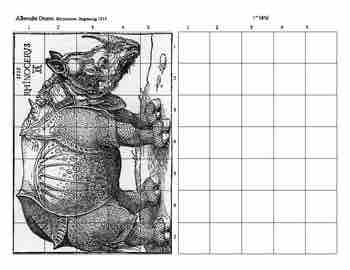
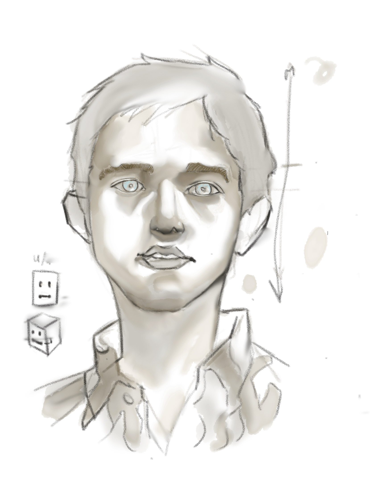

Copiez les maîtres: Takeiko Inoue
Dans ce premier essai, j’ai appris pas mal de choses.
La première (et aussi, celle que l’on remarque tout de suite) est que les proportions sont importantes.

On voit que même s’il y a une certaine ressemblance, la forme du visage et les distances entre les éléments sont vraiment très éloignées.

J’ai appris donc que pour améliorer mes portraits il faudrait apprendre à mesurer les distances avec le crayon.

Même si je croyais pouvoir corriger le dessin au fur et à mesure. Quelle naïveté
Mais je me demande si pour ce genre d’étude mesurer au crayon est l’option la plus adéquate. En fin de compte, on est en train de copier une image statique en 2D et non un modèle vivant. Je crois que diviser l’image avec une grille serait peut-être plus pertinent. 🤔


J’ai appris aussi que dessiner en petit est une très mauvaise habitude.
Les valeurs c’est-à-dire la relation entre les parties lumineuses et obscures sont aussi déséquilibrées. Faudrait-il peut-être définir une échelle de grise au préalable ?
Pour finir, j’ai appris que Takehiko Inoue a une sensibilité artistique extraordinaire et un goût exquis. Bon, c’est faux, je le savais déjà. 😝
J’hésite à barrer le challenge de la liste parce que je crois qu’il y a encore de choses à apprendre de cette image. Sans parler du fait que ce premier essai n’est pas vraiment fini.
Je vais donc le finir (lèvres, oreilles, chemise et chevaux manquent de détails) et -probablement- regarder quelques tutoriels sur la prise de mesures pour retenter l’expérience avec plus de ressources.
Voilà voilou 🐣
- iPad Pro + Apple pencil.
- Environ 2 h.
- Paper pour iPad.